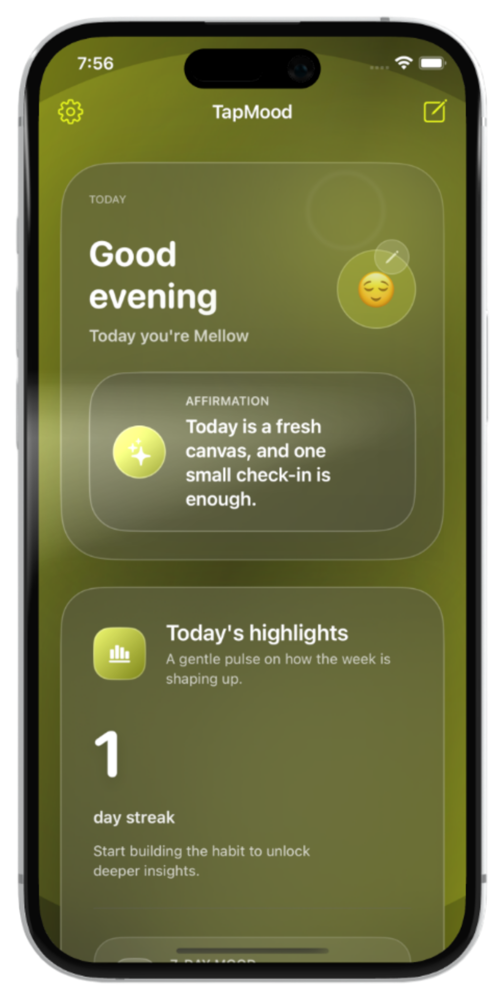

TapMood
Private by design
Feel every moment.
A calm, private way to understand your emotional patterns. Built for daily clarity, not endless scrolling.
On-device privacy
Daily reflections
Adaptive insights

WayV
Technology should feel human.
We design products with quiet confidence. Minimal friction, thoughtful motion, and privacy that stays yours.
01
Calm focus
Interfaces that let your work breathe, with no noisy distractions.
02
Private intelligence
Insights that stay on your device and serve you, not an ad network.
03
Thoughtful support
Real people, quick replies, and documentation that respects your time.
Built by WayV
A family of focused tools
Crafted with restraint, polish, and performance.